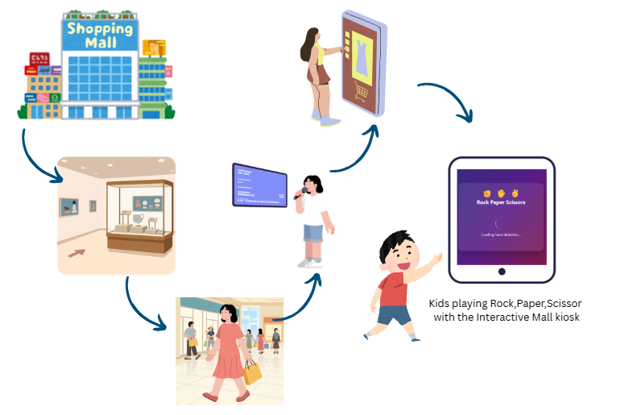

I thought about the environment where this interactive experience could be used and came up with the idea of an outdoor mall or shopping complex. An interactive kiosk can be placed in outdoor/indoor mall spaces to make it more lively and fun for people and kids. The gesture-based game creates an engaging experience that draws people in and adds playful energy to public spaces.

Trained gesture recognition for three distinct hand positions: Rock (fist), Paper (open hand), and Scissors (two fingers). The system successfully detects and responds to each gesture in real-time.
